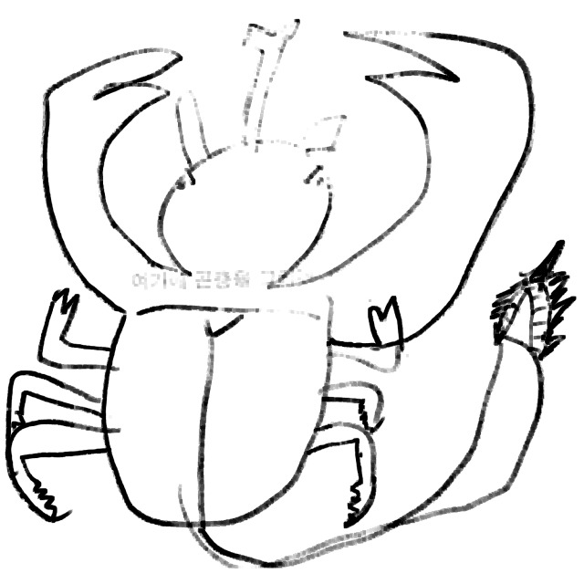
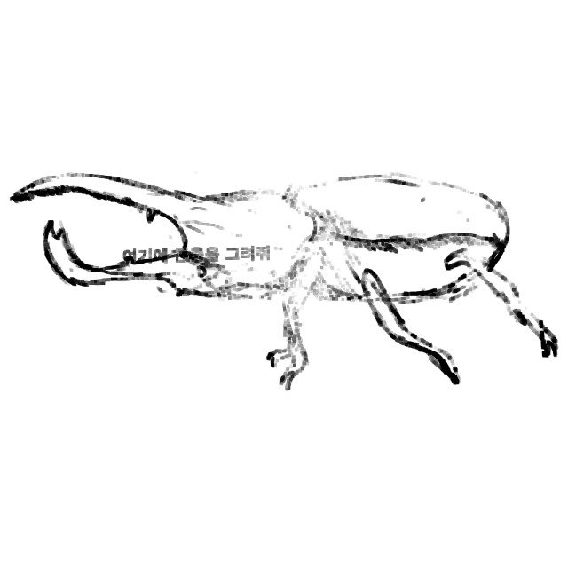
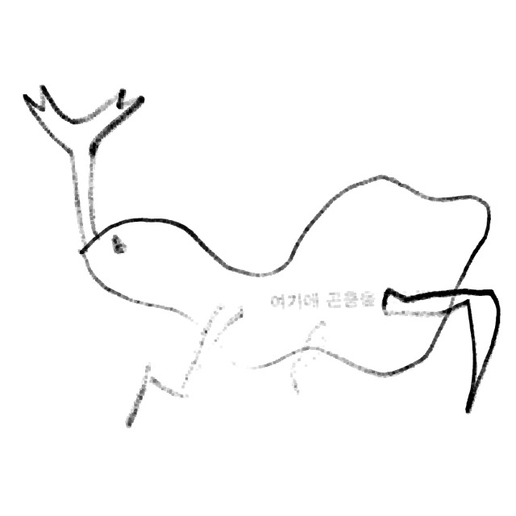
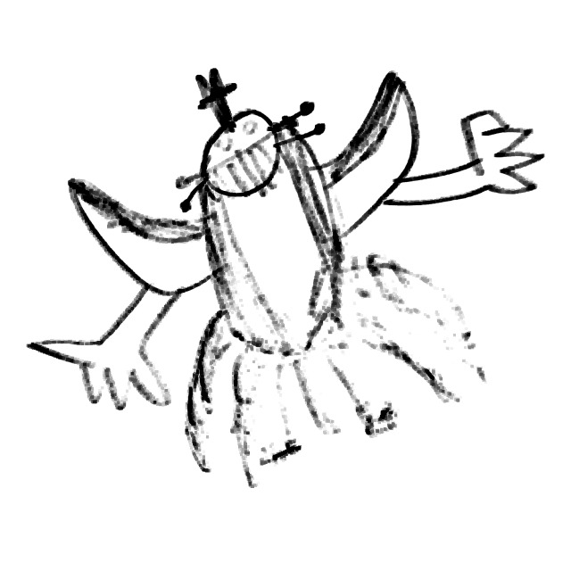
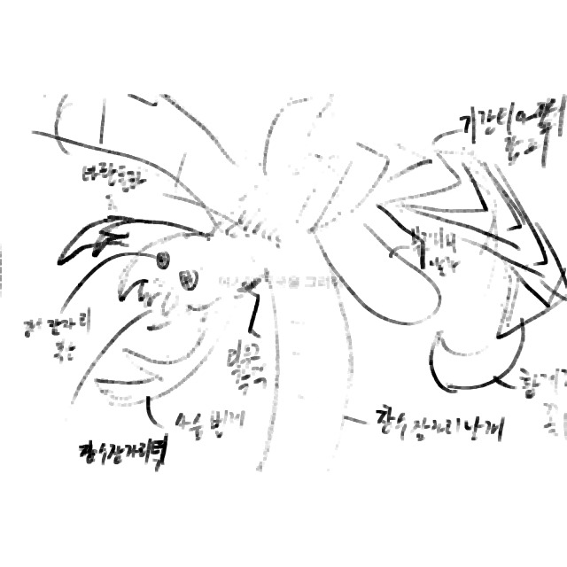
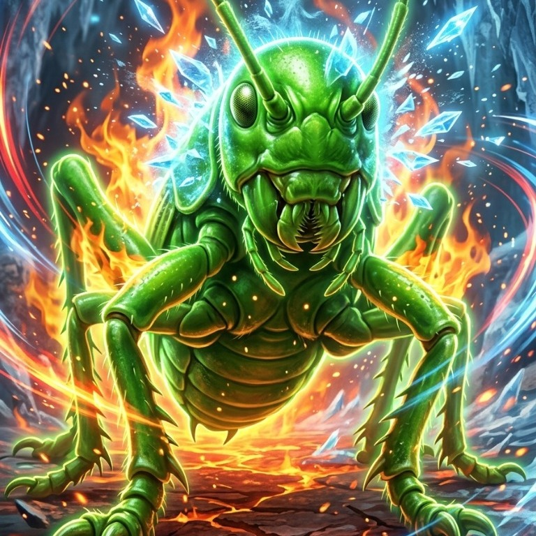
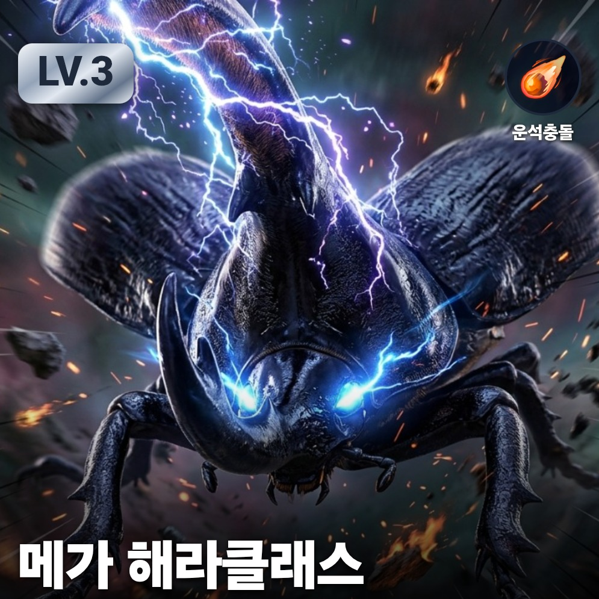
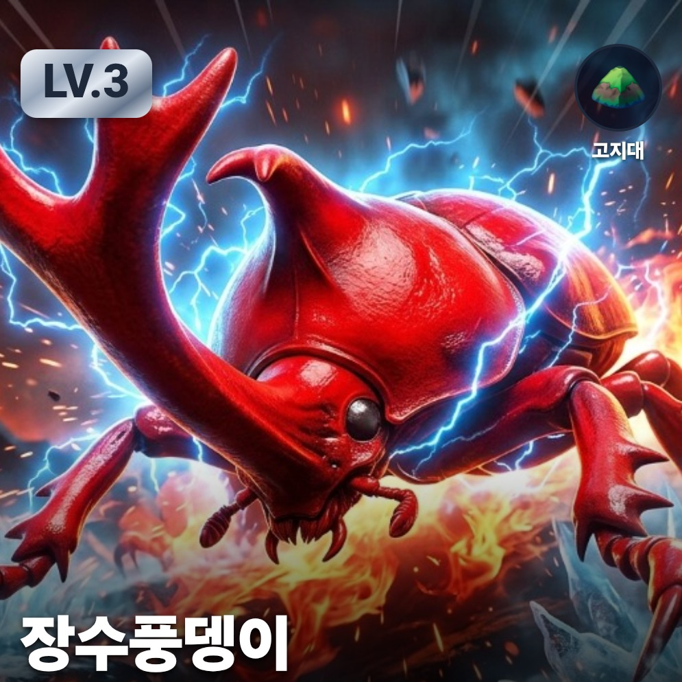
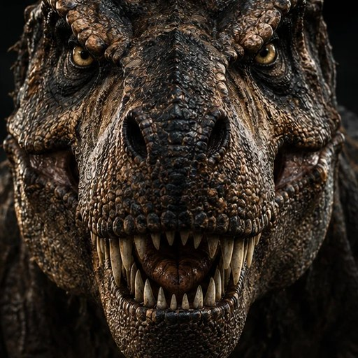
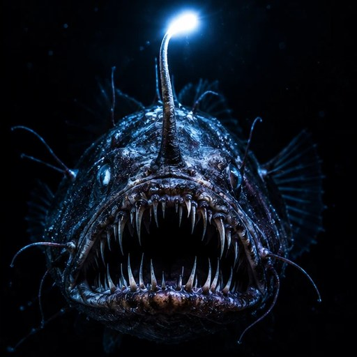

아이가 직접 그린 곤충의 몸 구조와 태어난 환경을 바꿔 보며, 생물이 환경에 맞춰 살아가는 원리(적응과 진화)를 AI 와 함께 배우는 체험 수업입니다.
1수업은 이렇게 진행돼요
✏️
곤충 그리기
A4 활동지에 상상한 곤충을 자유롭게 그려요.
🧬
몸 구조 설계
곤충 종류를 고르고 머리·다리·갑옷·날개·눈 등을 1~5단계로 정해요.
🌍
환경·성장 선택
어디서 태어났는지, 얼마나 자랐는지 고르면 능력이 달라져요.
AI 가 실감 나는 곤충으로 그리고, 능력 변화를 도형으로 보여줘요.
2이렇게 설계하고, AI 가 그려줘요
① 몸 구조 고르기부위마다 1~5단계, 능력 모양이 바로 바뀌어요
② 태어난 환경 고르기환경마다 강한 점과 약한 점이 달라요
③ 아이가 좋아하는 곤충을 직접 그려봐요!AI가 곤충을 더 멋지게 바꿔줍니다
✏️ 아이들이 직접 그린 곤충





✨ AI 가 더 멋지게 바꿔준 곤충



- 아이가 그린 모양을 최대한 반영해서 그려줘요
- 같은 곤충도 아이가 넣은 정보와 그림으로 전혀 다른 곤충이 완성돼요
- 그림을 잘 그릴 필요 없어요, 곤충을 잘 몰라도 돼요
- 상상력, 관찰력, 논리를 통해 건강하게 생존할 수 있는 곤충을 만들어요
3아이들이 배우는 것
🌱적응환경에 따라 살아남기 좋은 몸이 달라요
⚖️장단점몸의 한 부분을 키우면 다른 부분이 약해져요
🔍관찰·비교실제 곤충의 몸 구조와 비교해 봐요
🌈다양성같은 곤충도 선택에 따라 전부 달라져요
🤖AI 이해내 생각을 설명해 AI 가 그리게 해요
4기관의 요청에 따라 주제 변경
G7BB 진화 탐구 시리즈"몸의 특징을 고르고, 환경을 바꾸고, 결과를 비교한다" — 같은 수업 틀로 다른 생물을 배워요.

🦖 공룡몸집·이빨·사는 시대를 골라 보며 생존과 멸종을 생각해요

🐟 어류지느러미·몸 모양과 물의 깊이·온도로 물속 적응을 배워요
🌿 식물잎·뿌리와 햇빛·물·흙 조건으로 식물의 생존 전략을 배워요